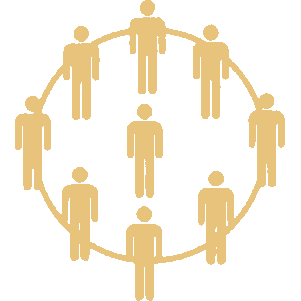
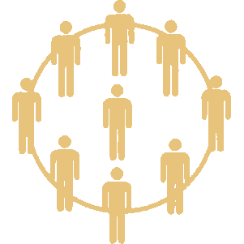

Political Triangle | Three Telos Model
Что за модель трёх телосов?
Модель трёх телосов, также известная как Политический треугольник - это политико-философская модель, которая описывает идеологии, политические взгляды и даже культуру в пространстве трёх фундаментальных целей (телосов). Это отличает её от классического политического компаса, который состоит лишь из двух осей.
Вам будут даны темы и 6 разных мнений о каждой. Вы должны выбрать одно из них, наиболее совпадающее с вашей позицией, либо, если вы не согласны ни с одним утверждением, выбрать вариант "затрудняюсь ответить". Каждый ответ будет слегка влиять на ваши значения по каждой оси (кроме варианта "затрудняюсь ответить"). В конце опроса, ваши ответы сформируют конечную точку на этом компасе. Отвечайте честно!
Что за три телоса (оси)?
Есть три независимые оси, каждая из которых имеет две противоположные ценности. Ниже представлены эти оси с описанием крайних позиций:
 Индивидуализм vs Коллективизм 
Индивидуализм vs Коллективизм 
Для индивидуалиста свобода человека (индивида) от коллектива и государства первичная ценность. Для коллективиста достижение целей коллектива и/или государства превыше ценности свободы индивида.
Коллективистские представления господствовали с древности. Человек определялся не как самостоятельная личность, а как часть рода, племени или сословия. Его место и обязанности и задавались принадлежностью к общине, а не личным выбором.
Ростки индивидуализма начали формироваться постепенно - через торговлю, Ренессанс и гуманизм, которые возвели личность в ранг самостоятельной ценности. Реформация укрепила индивидуализм в Северной Европе, провозгласив личную веру и совесть главным источником духовного авторитета, что что подорвало власть церкви и сословных структур. Просвещение утвердило эту идею философски: свобода и разум индивида стали мерилом справедливости и источником власти. Из этого корня выросли классический либерализм и конституционализм.
Однако Просвещение дало начало и новому пониманию коллективизма. В XIX веке социалисты, вдохновлённые идеями равенства и общего блага, стремились восстановить чувство общности, "разрушенное индивидуализмом капитализма". Маркс придал этим идеям строгую форму, сведя человека к участнику производственного процесса и носителю классовых интересов. В свою очередь, кризисы индустриального общества и массовая политика начала XX века породили национальный коллективизм - фашизм и национал-социализм, где источник единства видели уже не в классе, а в нации как едином теле, подчиняющем себе личность.
После Второй мировой войны авторитарный коллективизм отступил на Западе, но сохранился в странах соцблока и странах третьего мира - в партийных, религиозных и традиционных формах. Конец XX века принёс кратковременный подъём индивидуализма с неолиберальной волной, однако в XXI веке под воздействием цифровизации и глобализации возникла новая, гибридная форма коллективизма. Она не разрушает индивидуальную автономию стремительно, но постепенно подменяет её участием в общих сетях, трендах и моральных системах согласия. На Западе это оформилось в новой левой повестке, сочетающей идеи социально-экономической и климатической справедливости, идентичности с цифровой взаимозависимостью и культурным конформизмом.
В большей части остального мира коллективизм XXI века соединяет традиционные формы солидарности с современными механизмами власти. Он проявляется то в технократических государствах и идее национального развития, то в религиозных и культурных общинах, где вера, традиция и общий исторический опыт создают чувство принадлежности.
 Иерархия vs Равенство
Иерархия vs Равенство
Сторонник равенства считает, что угнетение пронизывает общество и сознание. Он убеждён, что освобождение от него путём социальных и экономических преобразований должно вернуть человеку контроль над трудом, культурой и смыслом жизни.
Жёсткие подходы включают революционные изменения: большевизм (1917) с национализацией и репрессиями, маоизм (Культурная революция, 1966) и режим Пол Пота (1975) с принудительным аграрным равенством.
Мягкие подходы опираются на реформы: New Deal (1930-е) с социальным страхованием, феминистское движение 1960-х и скандинавская модель прогрессивных налогов и социальных гарантий.
С 1960-х "новые левые", развивая критическую теорию Франкфуртской школы, расширили анализ угнетения на культуру, расу и гендер, изучая механизмы угнетения в языке, образовании и медиа. Сегодня именно это направление является мейнстримом в левой мысли западных обществ.
Сторонник иерархии верит, что конкуренция - двигатель прогресса. По его мнению, победитель получает вознаграждение и продолжает бороться, когда как проигравший либо меняется, либо продолжает терпеть поражения.
Иерархию называют естественным порядком, по которому человечество жило большую часть истории: от первобытных племён с вождями до античных обществ с рабством и феодальных систем, где власть стекала сверху вниз.
Просвещение и модерн подорвали средневековую институциональную (коллективисткую) иерархию идеями разума, индивидуальных прав и общественного договора (Локк, Вольтер, Руссо). Монарх перестал считаться божественным, а власть стала считаться легитимной только при согласии управляемых. Это привело к революциям (например Американская в 1776 и Французская в 1789) и переходу к конституционным формам правления.
Коллективистская иерархия пережила кризис в XVIII–XIX веках, но переродилась с заменой божественное права на светскую цель. В XIX веке национализм сформулировал её, превратив "общую цель" в волю нации как единого целого. В XX веке, на фоне экономических и политических кризисов, она воплотилась в фашизме и национал-социализме. Государство стало инструментом национального возрождения, а лидер воплощением воли народа. Конкуренция ограничивалась рамками лояльной общности под контролем партийного аппарата.
С падением этих строев, коллективистская иерархия сохраняется в авторитарных государствах и немногочисленных монархиях.
 Эгалитаризм vs Абсолютизм
Эгалитаризм vs Абсолютизм 
Эгалитарист убеждён, что государство должно обеспечивать равные права для всех граждан, не признавая наследуемой иерархии или каст. Абсолютист считает, что государство должно закреплять иерархию. Права и обязанности, по его мнению, не равны и зависят от сословия/службы. Он верит, что верховный лидер - источник закона.
Вам не нравятся ваши результаты?
Если у вас какие-либо предложения или конструктивная критика для этого проекта, пишите мне в дискорд (zexxxor) или телеграмм (https://t.me/N0_War)
P.S. За спам в личке буду кидать в чс без разбора